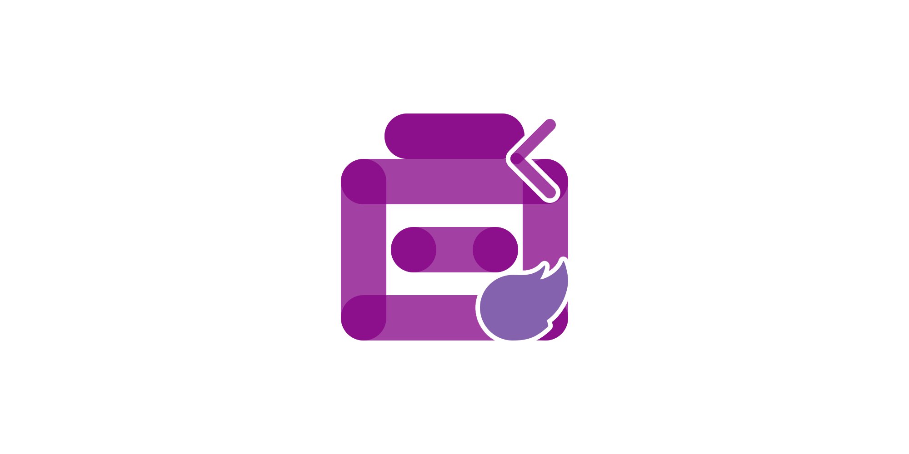
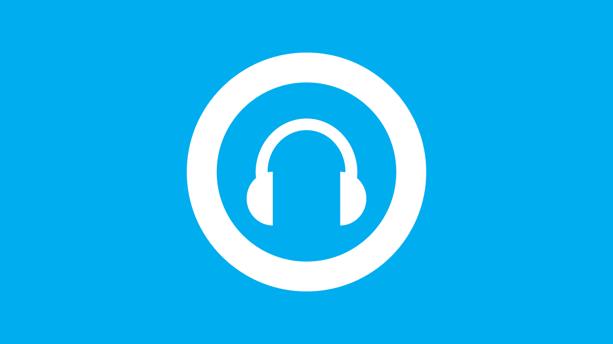

Comentsys.Toolkit.Blazor 1.1.0 Released
1st September 2026

Today sees the Release of version 1.1.0 of my Toolkits package
of Comentsys.Toolkit.Blazor for Blazor Server and / or Blazor WebAssembly on both NuGet
and open-source on GitHub. Components include Asset
for Asset Resources, Clock, Dial, Directional Pad, Directional Stick,
Segment Display, Matrix Display, Donut, Gauge and Sector. This Release
comes with fixes for Components including resize updates for Dial and Directional Stick which also includes sensitivity fix
plus colour / style updates for SegmentDisplay and MatrixDisplay along with fix to Clock. Another addition is a
Developer Reference website which has details, examples and more for Components to help developers use the Toolkit
at comentsys.github.io/Comentsys.Toolkit.Blazor.
RoguePlanetoid Weekly Update #96
1st September 2026

This month it good to be back after taking time out from own projects for personal reasons, there's the latest episode of the RoguePlanetoid Podcast
about Windows Phone, it may be long gone but it had a major impact on my career with a fantastic developer
experience for mobile development that is hard to match compared with today's mobile development platforms especially the emulator experience and begins the
theme of the next few Episodes of the Podcast.
This week it was good to get the Article for TechNExt 2026 - Data and AI Hub published with sessions
from the morning, although was unable to attend the rest of the events that day and week it was a really great experience and look forward
to getting involved next year with TechNExt 2027! Another Article is on Datalyst 2026 which I took time
to attend to step in as a back-up speaker, although that was not needed it was great to be there!
Last month Microsoft announced the next phase of the open-source journey covered in my article, WinUI development in the open,
it is great to see Microsoft making efforts on GitHub
to make WinUI a collaborative experience for developers. This week will also see an update to my Toolkit for Blazor,
with it getting few a fixes and update for .NET 10 along with a new developer reference website for
Comentsys.Toolkit.Blazor.
RoguePlanetoid Podcast - Episode Forty One - Windows Phone
1st September 2026

Today sees the release of Episode Forty One of the RoguePlanetoid Podcast
about Windows Phone, Sixteen years ago, Windows Phone was announced and released,
a mobile platform from the past that helped shaped the present.
You will find the Podcast where you listen to your podcasts such as Spotify,
Amazon Music, RadioPublic, Apple Podcasts, Pandora,
YouTube Music along with YouTube where you can catch up with previous episodes
and Subscribe or Follow so you don't miss any future Episodes.